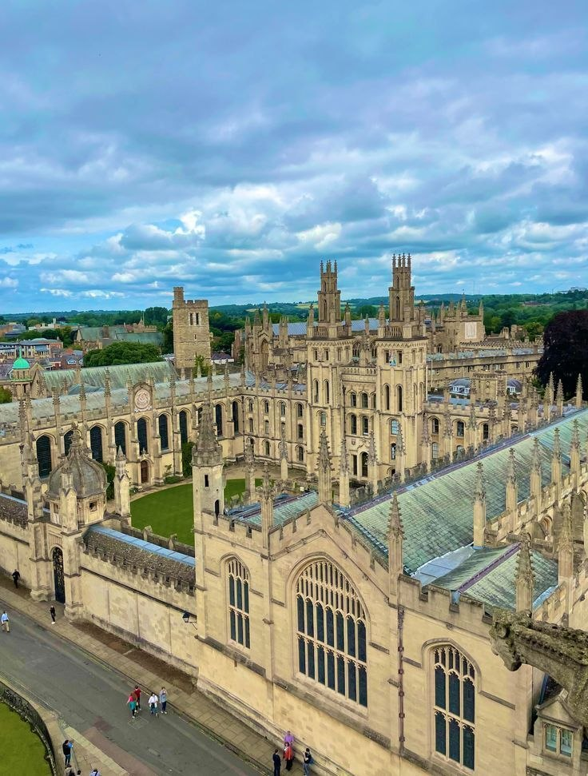
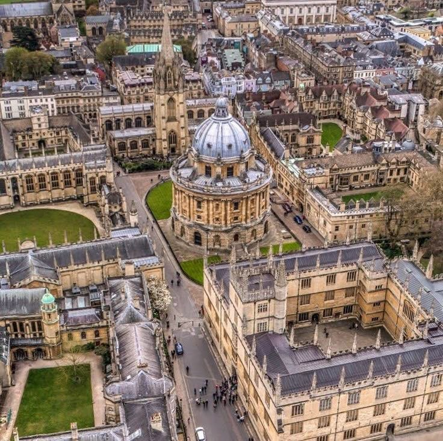
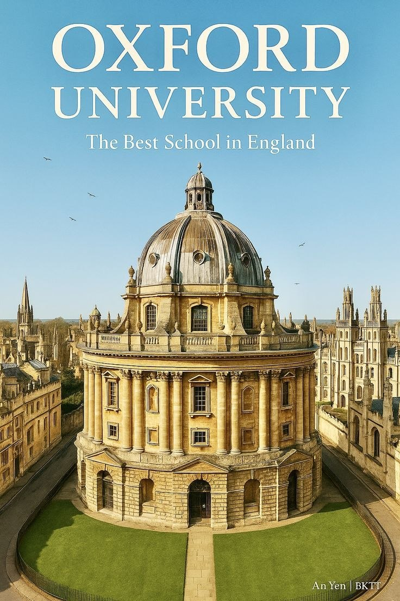
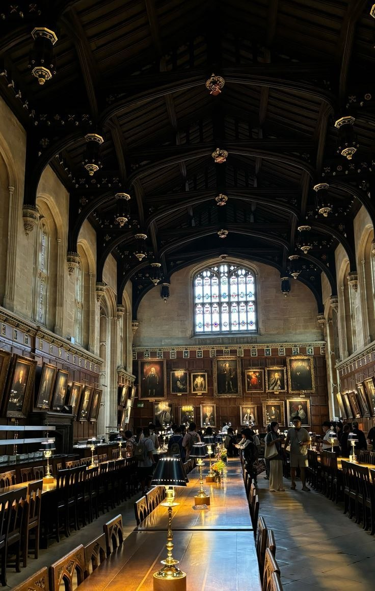

Oxford University
🏛️ Oxford University: အသိပညာရှင်တို့ စုဝေးရာ သမိုင်းဝင် အသိုက်အဝန်း
Oxford University (အောက်စ်ဖို့ဒ် တက္ကသိုလ်) ဆိုသည်မှာ ရိုးရိုးတက္ကသိုလ်တစ်ခုထက် ပိုပါသည်။ ၎င်းသည် နှစ်ပေါင်း ၉၀၀ ကျော် သက်တမ်းရှိသော ရှေးဟောင်းအဆောက်အအုံများ၊ ခန့်ညားထည်ဝါသော ကျောင်းဆောင်များနှင့် ကမ္ဘာ့အတော်ဆုံး ဦးနှောက်များ စုစည်းရာ "ပညာရှင်တို့၏ လူမှုအသိုက်အဝန်းကြီး" တစ်ခု ဖြစ်သည်။
ဤတက္ကသိုလ်၏ ထူးခြားချက်မှာ အုတ်တံတိုင်းခတ်ထားသော ကျောင်းဝင်းတစ်ခုတည်း မဟုတ်ဘဲ Oxford မြို့ပြကြီးတစ်ခုလုံးနှင့် တစ်သားတည်း ရောနှောတည်ရှိနေခြင်း ဖြစ်သည်။ မြို့လယ်လမ်းမများ၊ ကျောက်ခင်းလမ်းများနှင့် ရှေးဟောင်းစာကြည့်တိုက်များကြားတွင် ကမ္ဘာတစ်ဝှမ်းမှ ထူးချွန်ထက်မြက်သည့် လူငယ်များနှင့် ပညာရှင်ကြီးများသည် အသိပညာဗဟုသုတများကို လွတ်လပ်စွာ ဖလှယ်ဆွေးနွေးနေကြသည်။
Oxford ၏ အနှစ်သာရမှာ Collegiate System (ကောလိပ်စနစ်) ဖြစ်ပြီး၊ ကျောင်းသားတိုင်းသည် မိသားစုကဲ့သို့ နွေးထွေးသော ကောလိပ်ငယ်များတွင် နေထိုင်ကာ ဆရာနှင့်ကျောင်းသား မျက်နှာချင်းဆိုင် အပြန်အလှန် ငြင်းခုံဆွေးနွေးရသော Tutorial စနစ်ဖြင့် ကိုယ်ပိုင်တွေးခေါ်မှုကို ပျိုးထောင်ကြသည်။ ဤနေရာသည် သိပ္ပံပညာရှင်၊ စာရေးဆရာနှင့် ကမ္ဘာ့ခေါင်းဆောင်ပေါင်းများစွာကို မွေးထုတ်ပေးခဲ့သည့် အိပ်မက်မျှော်စင်များမြို့တော် (City of Dreaming Spires) ဖြစ်သလို၊ ယနေ့ထက်တိုင် ကမ္ဘာ့ပညာရေးလောကကို ဦးဆောင်နေသည့် အသိပညာ၏ ပြယုဂ်တစ်ခုလည်း ဖြစ်ပါသည်။



Oxford ရဲ့ ရှေးဟောင်းအဆောက်အအုံတွေဟာ အလွန်လှပတာကြောင့် Harry Potter ရုပ်ရှင်ရိုက်ကွင်းတွေအဖြစ် အသုံးပြုခဲ့ကြပါတယ်။ (ဥပမာ - Christ Church College ထဲက စားသောက်ခန်းမဟာ Hogwarts ရဲ့ Great Hall အတွက် စိတ်ကူးရစေခဲ့တဲ့ နေရာဖြစ်ပါတယ်)။
